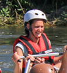

"This was hands-down the highlight of our summer. The guides were incredibly professional, knowledgeable, and kept us laughing the entire time we were on the river. The Class IV rapids gave us the perfect rush of adrenaline, but we always felt completely safe. I cannot recommend this company enough for anyone looking for a real adventure!" — Sarah M.